4 Preprocesamiento y visualización - Estacionariedad, ACF/PACF, STL, ARIMA, Puntos de cambio y Pronóstico
4.1 Resumen
Este cápitulo presenta una interpretación detallada de los resultados de Preprocesamiento y visualización de la serie temporal horaria de potencia. Se describen los patrones de tendencia y estacionalidad a distintas escalas (diaria, semanal, mensual y anual), la verificación/inducción de estacionariedad (diferenciación), el análisis ACF/PACF, la descomposición STL/MSTL, la detección de puntos de cambio, la identificación de outliers, el ajuste SARIMA (auto.arima) y el pronóstico.
4.3 Carga de datos y visualización
csv_path <- file.path(csv_dir, csv_name)
time_col <- "FECHA"; y_col <- "VALOR_IMPUTADO"
df <- tryCatch(readr::read_csv(csv_path, show_col_types = FALSE),
error = function(e) readr::read_csv2(csv_path, show_col_types = FALSE))
# Parseo robusto de fecha-hora y valor
df[[time_col]] <- parse_date_time(df[[time_col]],
orders = c("ymd HMS","ymd HM","dmy HMS","dmy HM","ymd","dmy"),
tz = TZ)
df[[y_col]] <- suppressWarnings(as.numeric(df[[y_col]]))
# Malla horaria completa para marcar NA (sin imputar)
df0 <- df %>% filter(!is.na(.data[[time_col]])) %>%
arrange(.data[[time_col]]) %>% select(!!time_col, !!y_col)
full_time <- tibble(!!time_col := seq(min(df0[[time_col]]), max(df0[[time_col]]), by = "1 hour"))
df_full <- full_time %>%
left_join(df0, by = time_col) %>%
mutate(is_na = is.na(.data[[y_col]])) %>%
arrange(.data[[time_col]])
# Serie imputada (para métodos que exigen regularidad)
tm("Imputación (na.interp)", {
df_impu <<- df_full %>% mutate(val_impu = forecast::na.interp(.data[[y_col]]))
})
# Vista rápida: primer tramo
ggplot(df_full, aes(x = .data[[time_col]], y = .data[[y_col]])) +
geom_line(na.rm = TRUE) +
labs(title = "Serie horaria de potencia (con huecos)", x = "Tiempo", y = "Potencia") +
theme_minimal()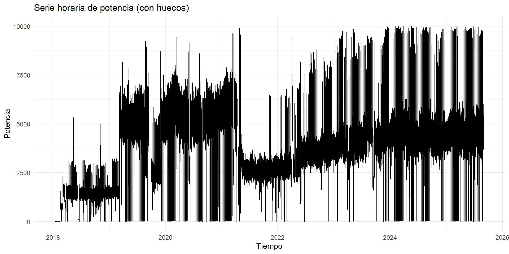
- Se observa la secuencia temporal de los valores de potencia con discontinuidades.
4.3.1 Bandas para huecos (NA) y vistas multiescala
na_spans_runs <- function(x_time, is_na_logical) {
r <- rle(is_na_logical)
ed <- cumsum(r$lengths); st <- ed - r$lengths + 1
tibble(is_na = r$values, i_start = st, i_end = ed) %>%
filter(is_na) %>%
transmute(xmin = x_time[i_start], xmax = x_time[i_end] + hours(1))
}
agg_by <- function(data, unit, label, time_col, y_col) {
data %>% mutate(period = floor_date(.data[[time_col]], unit)) %>%
group_by(period) %>% summarise(value = mean(.data[[y_col]], na.rm = TRUE), .groups = "drop") %>%
mutate(freq = label)
}
na_runs <- na_spans_runs(df_full[[time_col]], df_full$is_na)
diaria <- agg_by(df_full, "day", "Diaria", time_col, y_col)
semanal <- agg_by(df_full, "week", "Semanal", time_col, y_col)
mensual <- agg_by(df_full, "month", "Mensual", time_col, y_col)
anual <- agg_by(df_full, "year", "Anual", time_col, y_col)
plot_df <- bind_rows(diaria, semanal, mensual, anual) %>%
mutate(freq = factor(freq, levels = c("Diaria", "Semanal", "Mensual", "Anual")))ggplot() +
geom_rect(data = na_runs, aes(xmin = xmin, xmax = xmax, ymin = -Inf, ymax = Inf),
inherit.aes = FALSE, fill = "red", alpha = 0.3) +
geom_line(data = plot_df, aes(x = period, y = value), linewidth = 0.6, na.rm = TRUE) +
facet_wrap(~ freq, scales = "free_x", ncol = 2) +
labs(title = "Potencia — vistas diaria, semanal, mensual y anual",
subtitle = "Bandas rojas: periodos con NA en la serie original",
x = "Tiempo", y = "Potencia") +
theme_minimal(base_size = 11)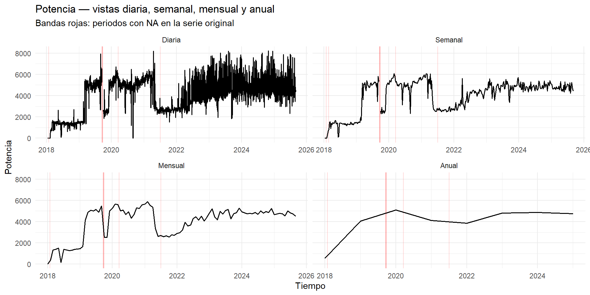
Las discontinuidades se indicaron con franjas de color rojo.
Estos huecos fueron imputados usando forecast::na.interp, método lineal-local que mantiene la coherencia temporal.
La imputación es obligatoria para construir una serie regular (necesaria para ARIMA, STL y MSTL). Si no se hace, los modelos no convergen ni generan predicciones confiables.
La potencia muestra una variabilidad cíclica, con fluctuaciones más suaves en las escalas semanales y mensuales.
Las bandas rojas señalan períodos con datos ausentes; su distribución ayuda a evaluar si hay estacionalidad interrumpida.
El análisis multiescala permite identificar tendencias de largo plazo y patrones repetitivos en diferentes horizontes.
4.4 Estacionariedad: prueba ADF (Augmented Dickey-Fuller Test) y diferenciación
# Vector numérico imputado
serie_vec <- as.numeric(df_impu$val_impu)
# ADF en serie original
adf_raw <- tseries::adf.test(serie_vec, k = 24)
adf_raw##
## Augmented Dickey-Fuller Test
##
## data: serie_vec
## Dickey-Fuller = -24.434, Lag order = 24, p-value = 0.01
## alternative hypothesis: stationary- El resultado de la Prueba ADF (Dickey-Fuller aumentada) indica que p-value = 0.01 < 0.05, indicando que es una serie estacionaria en media.
# Diferenciación sugerida y gráfico
d_sugerido <- forecast::ndiffs(serie_vec)
cat("Diferenciaciones sugeridas por ndiffs:", d_sugerido, "\n")## Diferenciaciones sugeridas por ndiffs: 1- “ndiffs” sugiere una diferenciación (d = 1) para estabilizar tendencia y variabilidad.
serie_diff <- if (d_sugerido > 0) diff(serie_vec, differences = d_sugerido) else serie_vec
df_diff <- tibble::tibble(
time = as.POSIXct(df_impu[[time_col]])[seq_along(serie_vec)],
Original = as.numeric(serie_vec),
Diferenciada = c(rep(NA, d_sugerido), as.numeric(serie_diff))
) |>
tidyr::pivot_longer(cols = c(Original, Diferenciada), names_to = "Serie", values_to = "Valor")
ggplot(df_diff, aes(time, Valor, color = Serie)) +
geom_line(linewidth = 0.6, alpha = 0.9, na.rm = TRUE) +
scale_color_manual(values = c(Original = "#6B7280", Diferenciada = "#1F77B4")) +
labs(title = "Serie original vs. diferenciada",
x = "Tiempo", y = "Potencia / ΔPotencia", color = "Serie") +
theme_minimal(base_size = 12)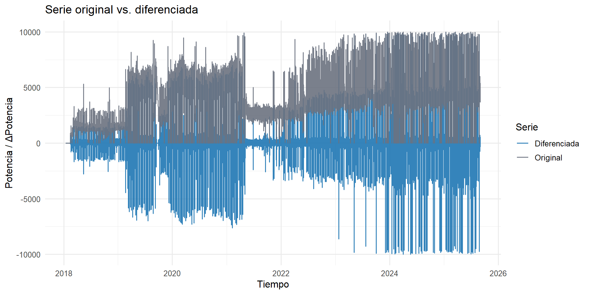
La serie original presenta tendencia ascendente y picos altos.
La serie diferenciada elimina la tendencia de la serie original, centrando la media alrededor de cero y reduciendo varianza.
# ADF nuevamente si se diferenció
if (d_sugerido > 0) {
cat("\nRe-prueba ADF en la serie diferenciada (d =", d_sugerido, "):\n")
print(tseries::adf.test(serie_diff, k = 24))
}##
## Re-prueba ADF en la serie diferenciada (d = 1 ):##
## Augmented Dickey-Fuller Test
##
## data: serie_diff
## Dickey-Fuller = -91.566, Lag order = 24, p-value = 0.01
## alternative hypothesis: stationaryEl resultado de la Prueba ADF (Dickey-Fuller aumentada) para la serie diferenciada indica que p-value = 0.01 < 0.05, indicando que es una serie estacionaria.
En modelos ARIMA se necesita estacionariedad. La diferenciación controla la no estacionariedad estructural sin alterar la forma estacional de corto plazo.
4.5 ACF y PACF (original y diferenciada)
# ============================================================
# 6. ACF y PACF (original y diferenciada)
# ============================================================
# --- Calcular ACF/PACF de la serie original ---
t0 <- Sys.time()
acf_obj <- try(acf(serie_vec, lag.max = lag_max, plot = FALSE), silent = TRUE)
pacf_obj <- try(pacf(serie_vec, lag.max = lag_max, plot = FALSE), silent = TRUE)
.timing[["ACF/PACF (original)"]] <- list(seconds = as.numeric(difftime(Sys.time(), t0, units = "secs")),
status = if (inherits(acf_obj, "try-error")) "ERROR" else "OK",
message = NA_character_)
# --- Graficar ACF/PACF de la serie original ---
if (!inherits(acf_obj, "try-error") && !inherits(pacf_obj, "try-error")) {
acf_df <- data.frame(lag = as.numeric(acf_obj$lag), acf = as.numeric(acf_obj$acf))
pacf_df <- data.frame(lag = as.numeric(pacf_obj$lag), pacf = as.numeric(pacf_obj$acf))
ci <- 1.96 / sqrt(length(serie_vec))
p1 <- ggplot(acf_df, aes(lag, acf)) +
geom_col(fill = "#1f77b4") +
geom_hline(yintercept = c(-ci, ci), linetype="dashed", color="red") +
labs(title = "ACF (serie original)", x = "Rezago (horas)", y = "ACF") +
theme_minimal()
p2 <- ggplot(pacf_df, aes(lag, pacf)) +
geom_col(fill = "#ff7f0e") +
geom_hline(yintercept = c(-ci, ci), linetype="dashed", color="red") +
labs(title = "PACF (serie original)", x = "Rezago (horas)", y = "PACF") +
theme_minimal()
print(p1); print(p2)
} else {
cat("Error al calcular ACF/PACF de la serie original.\n")
}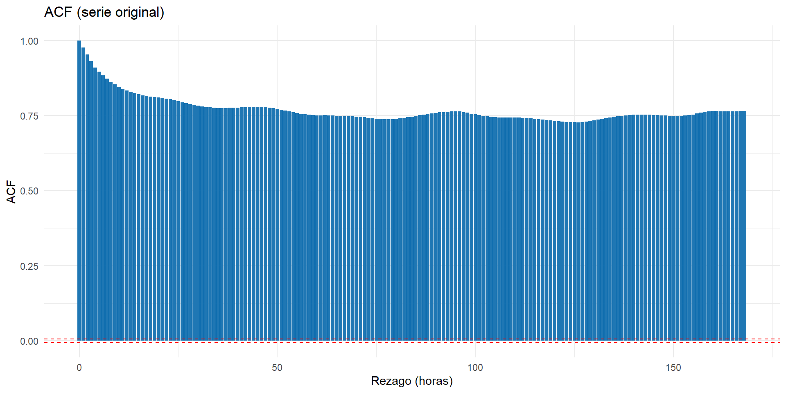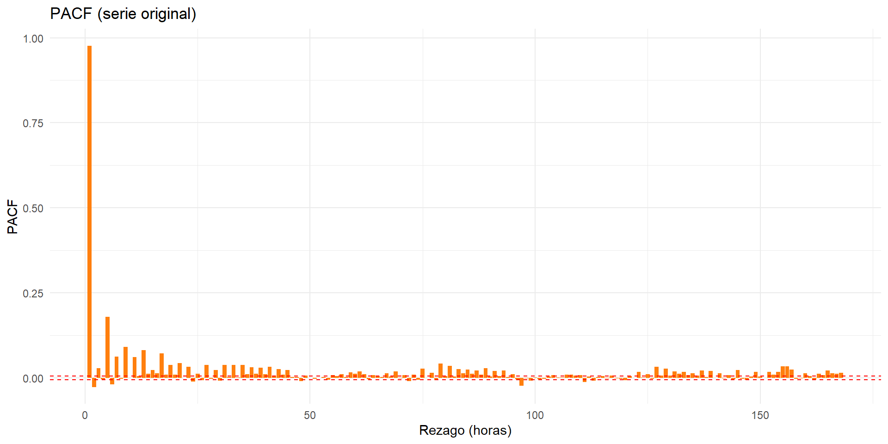
# --- Serie diferenciada ---
if (exists("serie_diff") && length(serie_diff) > 10 && !identical(serie_diff, serie_vec)) {
t0 <- Sys.time()
acf_d <- try(acf(serie_diff, lag.max = lag_max, plot = FALSE), silent = TRUE)
pacf_d <- try(pacf(serie_diff, lag.max = lag_max, plot = FALSE), silent = TRUE)
.timing[["ACF/PACF (diferenciada)"]] <- list(seconds = as.numeric(difftime(Sys.time(), t0, units = "secs")),
status = if (inherits(acf_d, "try-error")) "ERROR" else "OK",
message = NA_character_)
if (!inherits(acf_d, "try-error") && !inherits(pacf_d, "try-error")) {
acf_df_d <- data.frame(lag = as.numeric(acf_d$lag), acf = as.numeric(acf_d$acf))
pacf_df_d <- data.frame(lag = as.numeric(pacf_d$lag), pacf = as.numeric(pacf_d$acf))
ci_d <- 1.96 / sqrt(length(serie_diff))
p3 <- ggplot(acf_df_d, aes(lag, acf)) +
geom_col(fill = "#17becf") +
geom_hline(yintercept = c(-ci_d, ci_d), linetype="dashed", color="red") +
labs(title = "ACF (serie diferenciada)", x = "Rezago (horas)", y = "ACF") +
theme_minimal()
p4 <- ggplot(pacf_df_d, aes(lag, pacf)) +
geom_col(fill = "#2ca02c") +
geom_hline(yintercept = c(-ci_d, ci_d), linetype="dashed", color="red") +
labs(title = "PACF (serie diferenciada)", x = "Rezago (horas)", y = "PACF") +
theme_minimal()
print(p3); print(p4)
} else {
cat("Error al calcular ACF/PACF diferenciada.\n")
}
}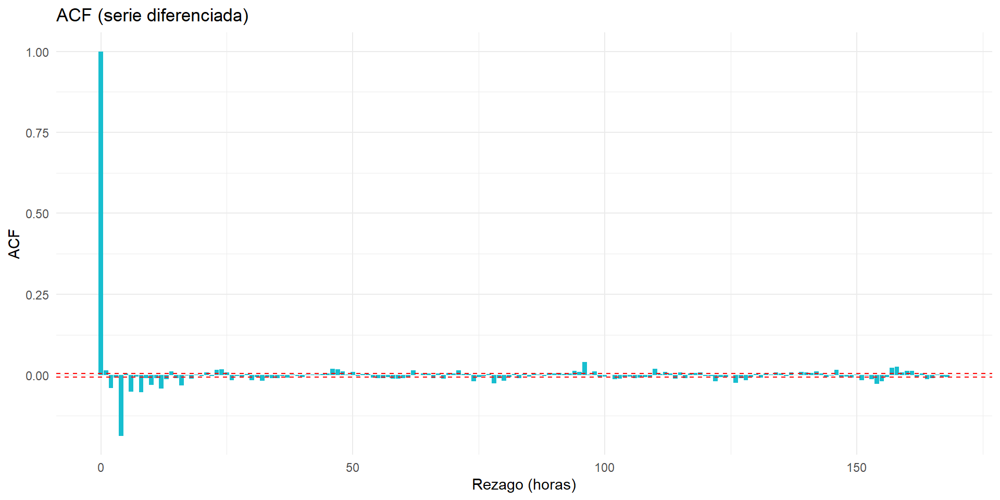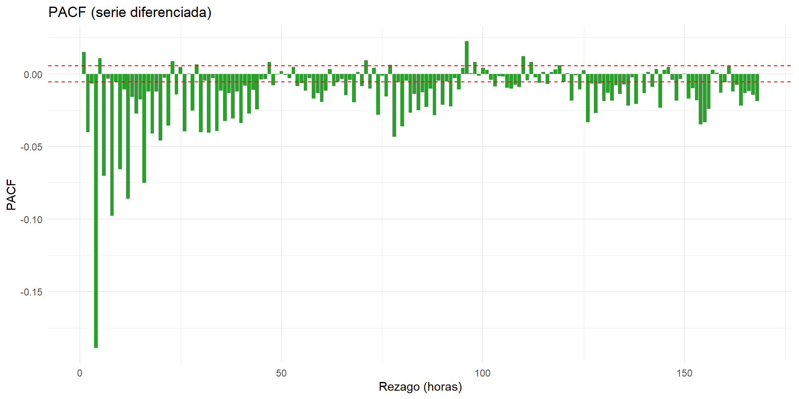
- La ACF de la serie original muestra valores muy altos (cercanos a 1) en los primeros rezagos y una disminución muy lenta a medida que aumenta el lag (hasta aproximadamente 168 horas, es decir, 7 días). La curva no cruza la banda de significancia (líneas rojas), lo cual indica una persistencia fuerte.
La alta autocorrelación inicial y su decaimiento lento son señales claras de no estacionariedad.
Este patrón implica que los valores pasados influyen fuertemente en los futuros, y que la serie tiene una tendencia o un ciclo estacional persistente.
La leve oscilación alrededor de los rezagos 24, 48, 72, etc., sugiere la presencia de una estacionalidad diaria (24 horas).
En conjunto, la ACF indica que la serie no tiene media constante y no fluctúa alrededor de un equilibrio estable.
La serie original no es estacionaria y requiere una transformación (diferenciación) para eliminar la tendencia y permitir el uso de modelos ARIMA.
- La PACF de la serie original presenta un pico muy pronunciado en el lag 1 y luego una rápida caída hacia valores pequeños alrededor de cero.
El gran valor en el primer rezago indica un componente autoregresivo fuerte de orden 1 (AR(1)).
La rápida caída posterior confirma que la mayor parte de la dependencia directa se concentra en los primeros rezagos.
Los valores bajos pero persistentes en rezagos múltiples reflejan todavía efectos indirectos acumulados, producto de la tendencia no estacionaria detectada.
La PACF confirma un componente autoregresivo significativo en la estructura de la serie original, aunque su interpretación precisa se distorsiona por la presencia de tendencia y estacionalidad.
- La ACF de la serie diferenciada muestra una autocorrelación fuerte únicamente en el rezago 1, pero el resto de las barras caen rápidamente dentro del intervalo de confianza (líneas rojas).
La diferenciación ha eliminado con éxito la tendencia y la dependencia a largo plazo.
Los valores cercanos a cero en los rezagos mayores indican que la serie ya no tiene memoria prolongada, es decir, es estacionaria en media.
El ligero pico negativo en los primeros rezagos podría sugerir un componente MA (Media Móvil) de bajo orden.
Tras la diferenciación, la ACF evidencia una serie estacionaria y más estable, con correlación significativa sólo a corto plazo.
- En la PACF de la serie diferenciada se observa un primer pico negativo (ligeramente pronunciado) y luego valores pequeños oscilando alrededor de cero, sin superar el umbral de significancia.
- Este patrón es típico de una serie con componente MA (q) después de la diferenciación.
- La ausencia de picos claros más allá del primer rezago indica que no existen dependencias autoregresivas persistentes.
- La PACF de la serie diferenciada confirma que el proceso se estabilizó tras la diferenciación, y que la estructura autoregresiva se redujo sustancialmente, favoreciendo modelos ARIMA sencillos con un componente de media móvil dominante.
4.6 Descomposición STL (Seasonal-Trend decomposition using Loess) y MSTL (Multiple Seasonal-Trend decomposition using Loess)
val_col <- if ("val_impu" %in% names(df_impu)) "val_impu" else
if ("VALOR_IMPUTADO" %in% names(df_impu)) "VALOR_IMPUTADO" else
stop("No encuentro columna de valores: usa 'val_impu' o 'VALOR_IMPUTADO'.")
# Utilidad para detectar columna estacional por periodo (acepta 'Seasonal-24', 'Seasonal 24', etc.)
find_seasonal_col <- function(df_comp, target_period) {
nm <- names(df_comp)
is_seas <- grepl("^Seasonal", nm, ignore.case = TRUE)
if (!any(is_seas)) return(NULL)
seas_nm <- nm[is_seas]
getp <- function(s) { p <- gsub("[^0-9]", "", s); if (nzchar(p)) as.integer(p) else NA_integer_ }
periods <- vapply(seas_nm, getp, integer(1))
idx <- which(periods == target_period)
if (length(idx)) seas_nm[idx[1]] else NULL
}
# ========== A) df_seas24: Estacionalidad diaria (24h) desde SERIE HORARIA ==========
x_hour <- as.numeric(df_impu[[val_col]])
time_hr <- as.POSIXct(df_impu[[time_col]])
stopifnot(length(x_hour) >= 24*14) # al menos ~2 semanas
ts_hour <- forecast::msts(x_hour, seasonal.periods = c(24, 168))
fit_m_hour <- forecast::mstl(ts_hour, robust = TRUE)
comp_h <- as.data.frame(fit_m_hour)
col_s24 <- find_seasonal_col(comp_h, 24)
if (is.null(col_s24)) {
# fallback: primera 'Seasonal' si no se pudo detectar 24 específicamente
cand <- grep("^Seasonal", names(comp_h), ignore.case = TRUE, value = TRUE)
col_s24 <- cand[1]
}
df_seas24 <- tibble(
time = time_hr,
Componente = "Estacionalidad diaria (24h)",
Valor = comp_h[[col_s24]]
)
# ========== B) df_seas12: Estacionalidad mensual (12) desde SERIE MENSUAL ==========
monthly <- df_impu %>%
mutate(mes = floor_date(.data[[time_col]], "month")) %>%
summarise(.by = mes, y = mean(.data[[val_col]], na.rm = TRUE)) %>%
arrange(mes)
stopifnot(nrow(monthly) >= 24)
ts_month <- stats::ts(
monthly$y, frequency = 12,
start = c(year(min(monthly$mes)), month(min(monthly$mes)))
)
fit_stl_m <- stats::stl(ts_month, s.window = "periodic", robust = TRUE)
comp_m <- as.data.frame(fit_stl_m$time.series)
# detectar columna estacional (nombre puede ser "seasonal"/"Seasonal")
seas_col_m <- names(comp_m)[grepl("season", names(comp_m), ignore.case = TRUE)][1]
if (is.na(seas_col_m)) stop("No se encontró columna estacional en STL mensual.")
df_seas12 <- tibble(
time = as.POSIXct(monthly$mes), # unificamos a POSIXct
Componente = "Estacionalidad mensual (12)",
Valor = comp_m[[seas_col_m]]
)
# ========== C) df_day_panel: Observada, Tendencia, Semanal(7d), Anual(365d), Residuo (SERIE DIARIA) ==========
daily <- df_impu %>%
mutate(day = floor_date(.data[[time_col]], "day")) %>%
summarise(.by = day, y = mean(.data[[val_col]], na.rm = TRUE)) %>%
arrange(day)
ts_day <- forecast::msts(daily$y, seasonal.periods = c(7, 365))
fit_m_day <- forecast::mstl(ts_day, robust = TRUE)
comp_d <- as.data.frame(fit_m_day)
# Normalizamos nombres para 'Trend' y 'Remainder'
nmd <- names(comp_d)
nmd <- sub("^trend$", "Trend", nmd, ignore.case = TRUE)
nmd <- sub("^remainder$", "Remainder", nmd, ignore.case = TRUE)
names(comp_d) <- nmd
# Detectar columnas estacionales 7 y 365
is_seas <- grepl("^Seasonal", names(comp_d), ignore.case = TRUE)
seas_nms <- names(comp_d)[is_seas]
getp <- function(s) { p <- gsub("[^0-9]", "", s); if (nzchar(p)) as.integer(p) else NA_integer_ }
seas_p <- vapply(seas_nms, getp, integer(1))
idx7 <- which(seas_p == 7)
idx365 <- which(seas_p == 365)
seas7 <- if (length(idx7)) comp_d[[seas_nms[idx7[1]]]] else NULL
seas365 <- if (length(idx365)) comp_d[[seas_nms[idx365[1]]]] else NULL
df_day_panel <- tibble(
time = as.POSIXct(daily$day),
Observada = daily$y,
Tendencia = if ("Trend" %in% names(comp_d)) comp_d$Trend else NA_real_,
Residuo = if ("Remainder" %in% names(comp_d)) comp_d$Remainder else NA_real_
)
if (!is.null(seas7)) df_day_panel[["Estacionalidad semanal (7d)"]] <- seas7
if (!is.null(seas365)) df_day_panel[["Estacionalidad anual (365d)"]] <- seas365
df_day_panel <- df_day_panel |>
pivot_longer(-time, names_to = "Componente", values_to = "Valor")
# ========== D) Panel combinado ==========
panel_all <- bind_rows(
df_day_panel, # Observada/Tendencia/Residuo + 7d/365d si existen
df_seas24, # Estacionalidad diaria (24h) desde HORAS
df_seas12 # Estacionalidad mensual (12) desde MESES
) %>%
mutate(
Componente = factor(
Componente,
levels = c("Observada", "Tendencia",
"Estacionalidad diaria (24h)",
"Estacionalidad semanal (7d)",
"Estacionalidad mensual (12)",
"Estacionalidad anual (365d)",
"Residuo")
)
)
# ========== E) Gráfico ==========
ggplot(panel_all, aes(x = time, y = Valor)) +
geom_line(linewidth = 0.45, alpha = 0.95, na.rm = TRUE) +
facet_wrap(~ Componente, ncol = 1, scales = "free_y", drop = FALSE) +
scale_x_datetime(date_breaks = "6 months", date_labels = "%b-%Y") +
guides(x = guide_axis(n.dodge = 2)) +
labs(
title = "Descomposición combinada de la serie completa",
subtitle = "Tendencia + Estacionalidades diaria (24h), semanal (7d), mensual (12) y anual (365d) + Residuo",
x = "Tiempo", y = "Valor"
) +
theme_minimal(base_size = 12) +
theme(plot.title = element_text(face = "bold"),
panel.grid.minor = element_blank())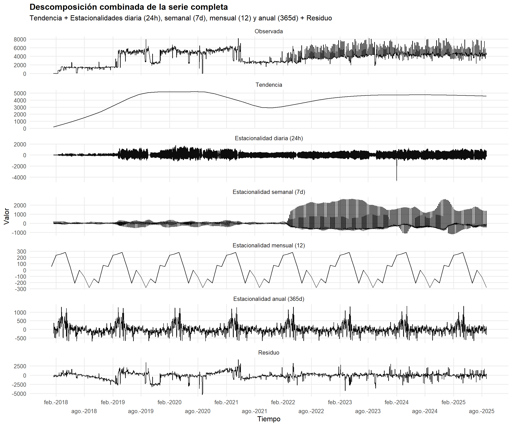
4.6.1 Descomposición de la serie por estacionalidades
# ============================================================
# Descomposición óptima de la serie:
# - Diaria (24h) → serie horaria (MSTL, seasonal.periods=24)
# - Semanal (7d) → serie horaria (MSTL, seasonal.periods=168)
# - Mensual (12) → serie mensual (STL, frequency=12)
# - Anual (365d) → serie diaria (STL, frequency=365)
# Gráficos en orden: Observada → Tendencia → Estacionalidad → Residuo
# ============================================================
# ==== 0) Utilidades ====
val_col <- if ("val_impu" %in% names(df_impu)) "val_impu" else "VALOR_IMPUTADO"
# Detecta, dentro de un data.frame de mstl/stl, la columna estacional de un periodo dado
find_seasonal_col <- function(df_comp, target_period) {
nm <- names(df_comp)
# posibles nombres: "Seasonal-24", "Seasonal 24", "seasonal24", etc.
is_seas <- grepl("^Seasonal", nm, ignore.case = TRUE)
seas_nm <- nm[is_seas]
if (!length(seas_nm)) return(NULL)
getp <- function(s) { p <- gsub("[^0-9]", "", s); if (nzchar(p)) as.integer(p) else NA_integer_ }
periods <- vapply(seas_nm, getp, integer(1))
idx <- which(periods == target_period)
if (length(idx)) seas_nm[idx[1]] else NULL
}
# Devuelve nombres (o NA) para Trend y Remainder segun el objeto mstl/stl
find_trend_remainder <- function(df_comp) {
nm <- names(df_comp)
trend <- nm[grepl("^Trend$", nm, ignore.case = TRUE)]
remainder <- nm[grepl("^Remainder$", nm, ignore.case = TRUE)]
list(trend = if (length(trend)) trend[1] else NA_character_,
remainder = if (length(remainder)) remainder[1] else NA_character_)
}
# Constructor genérico de gráfico con orden fijo de facetas
plot_decomp <- function(df_wide, time_col_name = "time", title_txt = "", x_is_date = FALSE,
date_breaks_main = "3 months") {
df_long <- df_wide |>
tidyr::pivot_longer(-dplyr::all_of(time_col_name),
names_to = "Componente", values_to = "Valor") |>
dplyr::mutate(
Componente = factor(
Componente,
levels = c("Observada","Tendencia","Estacionalidad","Residuo")
)
)
p <- ggplot(df_long, aes(x = .data[[time_col_name]], y = Valor)) +
geom_line(linewidth = 0.6, alpha = 0.95, na.rm = TRUE) +
facet_wrap(~ Componente, ncol = 1, scales = "free_y") +
labs(title = title_txt, x = "Tiempo", y = "Valor") +
theme_minimal(base_size = 12) +
theme(plot.title = element_text(face = "bold"),
panel.grid.minor = element_blank())
if (x_is_date) {
p <- p +
scale_x_date(date_breaks = date_breaks_main, date_labels = "%b-%Y") +
guides(x = guide_axis(n.dodge = 2))
} else {
p <- p +
scale_x_datetime(date_breaks = date_breaks_main, date_labels = "%b-%Y") +
guides(x = guide_axis(n.dodge = 2))
}
p
}
# ==== 1) Serie HORARIA → diaria(24h) y semanal(168h) con MSTL ====
x_hour <- as.numeric(df_impu[[val_col]])
time_hr <- as.POSIXct(df_impu[[time_col]])
stopifnot(length(x_hour) >= 24*14) # al menos ~2 semanas
ts_hour <- forecast::msts(x_hour, seasonal.periods = c(24, 168))
fit_mstl_hr <- forecast::mstl(ts_hour, robust = TRUE)
comp_hr <- as.data.frame(fit_mstl_hr)
# columnas clave
cols_hr <- find_trend_remainder(comp_hr)
col_trend_hr <- cols_hr$trend
col_rem_hr <- cols_hr$remainder
col_s24 <- find_seasonal_col(comp_hr, 24)
col_s168 <- find_seasonal_col(comp_hr, 168)
# --- A) Diaria (24h) sobre la serie horaria ---
df_day24 <- dplyr::tibble(
time = time_hr,
Observada = x_hour,
Tendencia = if (!is.na(col_trend_hr)) comp_hr[[col_trend_hr]] else NA_real_,
Estacionalidad = if (!is.null(col_s24)) comp_hr[[col_s24]] else NA_real_,
Residuo = if (!is.na(col_rem_hr)) comp_hr[[col_rem_hr]] else NA_real_
)
p_day24 <- plot_decomp(df_day24, time_col_name = "time",
title_txt = "Descomposición DIARIA (24h) — serie horaria",
x_is_date = FALSE, date_breaks_main = "3 months")
# --- B) Semanal (7d=168h) sobre la serie horaria ---
df_week168 <- dplyr::tibble(
time = time_hr,
Observada = x_hour,
Tendencia = if (!is.na(col_trend_hr)) comp_hr[[col_trend_hr]] else NA_real_,
Estacionalidad = if (!is.null(col_s168)) comp_hr[[col_s168]] else NA_real_,
Residuo = if (!is.na(col_rem_hr)) comp_hr[[col_rem_hr]] else NA_real_
)
p_week168 <- plot_decomp(df_week168, time_col_name = "time",
title_txt = "Descomposición SEMANAL (7d = 168h) — serie horaria",
x_is_date = FALSE, date_breaks_main = "6 months")
# ==== 2) Serie MENSUAL → mensual(12) con STL ====
monthly <- df_impu |>
dplyr::mutate(mes = lubridate::floor_date(.data[[time_col]], "month")) |>
dplyr::group_by(mes) |>
dplyr::summarise(y = mean(.data[[val_col]], na.rm = TRUE), .groups = "drop")
stopifnot(nrow(monthly) >= 24)
ts_month <- stats::ts(
monthly$y,
frequency = 12,
start = c(lubridate::year(min(monthly$mes)),
lubridate::month(min(monthly$mes)))
)
fit_stl_m <- stats::stl(ts_month, s.window = "periodic", robust = TRUE)
comp_m <- as.data.frame(fit_stl_m$time.series) # seasonal, trend, remainder
# nombres estandar
names(comp_m) <- tolower(names(comp_m))
df_month12 <- dplyr::tibble(
time = as.Date(monthly$mes),
Observada = as.numeric(ts_month),
Tendencia = comp_m$trend,
Estacionalidad= comp_m$seasonal,
Residuo = comp_m$remainder
)
p_month12 <- plot_decomp(df_month12, time_col_name = "time",
title_txt = "Descomposición MENSUAL (12) — serie mensual",
x_is_date = TRUE, date_breaks_main = "6 months")
# ==== 3) Serie DIARIA → anual(365) con STL ====
daily <- df_impu |>
dplyr::mutate(day = lubridate::floor_date(.data[[time_col]], "day")) |>
dplyr::group_by(day) |>
dplyr::summarise(y = mean(.data[[val_col]], na.rm = TRUE), .groups = "drop")
stopifnot(nrow(daily) >= 365) # ideal ≥ 2*365 para patrón robusto
ts_year <- stats::ts(
daily$y,
frequency = 365,
start = c(lubridate::year(min(daily$day)),
as.integer(format(min(daily$day), "%j")))
)
fit_stl_y <- stats::stl(ts_year, s.window = "periodic", robust = TRUE)
comp_y <- as.data.frame(fit_stl_y$time.series)
names(comp_y) <- tolower(names(comp_y))
df_year365 <- dplyr::tibble(
time = as.POSIXct(daily$day),
Observada = as.numeric(ts_year),
Tendencia = comp_y$trend,
Estacionalidad= comp_y$seasonal,
Residuo = comp_y$remainder
)
p_year365 <- plot_decomp(df_year365, time_col_name = "time",
title_txt = "Descomposición ANUAL (365d) — serie diaria",
x_is_date = FALSE, date_breaks_main = "1 year")
# ==== 4) Mostrar los 4 gráficos ====
p_day24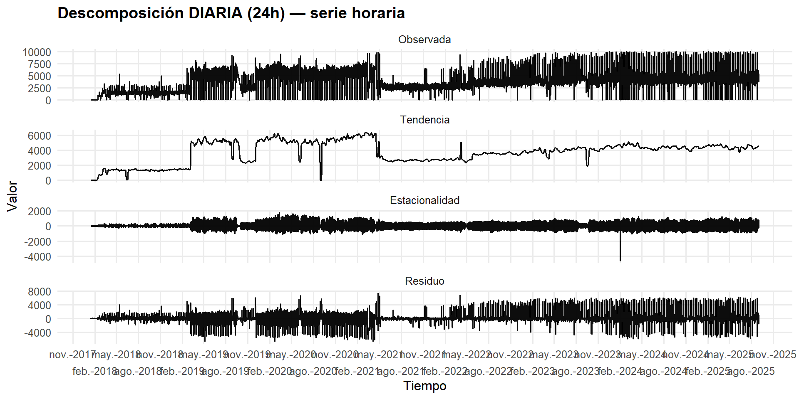
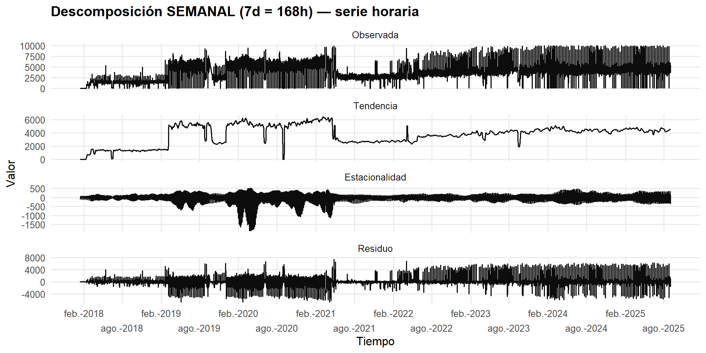
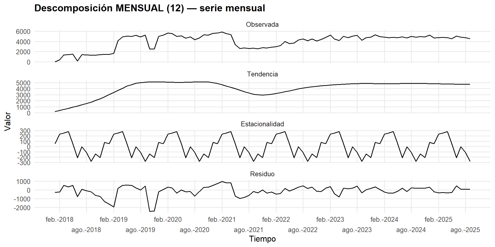
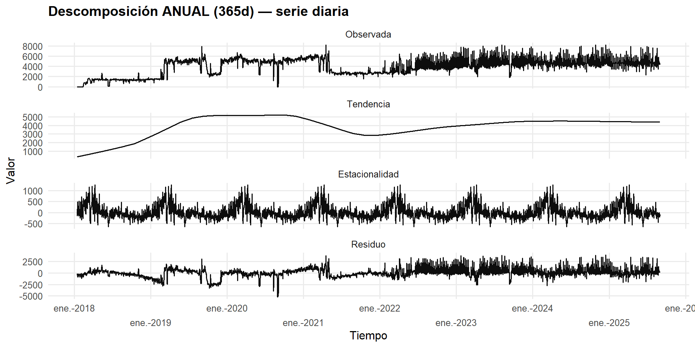
Tendencia: suaviza el comportamiento global; muestra una evolución sostenida de la potencia en el tiempo.
Estacionalidades:
- 24 h: patrón diario con repeticiones claras (potencia eléctrica según horas).
- 7 d: variación semanal con máximos en ciertos días.
- 12 m: ciclo anual ligado a estaciones o periodos de consumo.
- 365 d: refina oscilaciones de largo plazo.
Residuo: oscilaciones aleatorias sin patrón sistemático.
La descomposición MSTL permite aislar múltiples estacionalidades y verificar si cada componente explica variaciones específicas. No requiere transformaciones adicionales al trabajar sobre serie imputada y diferenciada.
4.6.2 Descomposición de la serie en una ventana de 4 semanas
t0 <- Sys.time()
ini_zoom <- as.POSIXct("2021-02-01", tz = TZ)
fin_zoom <- ini_zoom + lubridate::weeks(4)
seg_4w <- df_impu %>%
dplyr::filter(.data[[time_col]] >= ini_zoom,
.data[[time_col]] < fin_zoom)
ts24_zoom <- ts(as.numeric(seg_4w$val_impu), frequency = 24)
fit_stl <- try(stl(ts24_zoom, s.window = "periodic", robust = TRUE), silent = TRUE)
.timing[["STL (ventana 4 semanas)"]] <- list(
seconds = as.numeric(difftime(Sys.time(), t0, units = "secs")),
status = if (inherits(fit_stl, "try-error")) "ERROR" else "OK",
message = if (inherits(fit_stl, "try-error")) as.character(fit_stl) else ""
)if (!inherits(fit_stl, "try-error")) {
plot(fit_stl, range.bars = FALSE, main = "STL (ventana de 4 semanas)")
} else {
cat("No se pudo calcular STL (ver mensaje en la tabla de tiempos).\n")
}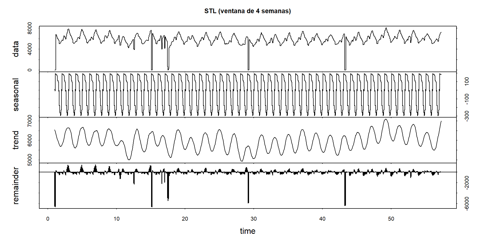
Muestra el detalle de la estructura estacional de corto plazo: ciclos diarios consistentes.
Permite comprobar estabilidad local de la tendencia y detectar posibles cambios abruptos.
Analizar ventanas cortas sirve para validar la homogeneidad de los patrones estacionales dentro del año.
4.7 Selección del modelo eficiente (auto.arima) y Pronóstico
tm("Ajuste SARIMA + Pronóstico", {
y_fit <<- ts(serie_vec, frequency = 24)
m_auto <<- forecast::auto.arima(
y_fit,
d = d_sugerido,
seasonal = TRUE,
stepwise = TRUE,
approximation = arima_approx,
max.p = 5, max.q = 5, max.P = 2, max.Q = 2
)
print(m_auto)
h_days <<- horizon_days
h <<- 24 * h_days
fc <<- forecast::forecast(m_auto, h = h)
print(autoplot(fc) + labs(title = paste0("Pronóstico SARIMA (", h_days, " días)"),
x = "Tiempo", y = "Potencia"))
})## Series: y_fit
## ARIMA(1,1,1)(0,0,2)[24]
##
## Coefficients:
## ar1 ma1 sma1 sma2
## -0.8940 0.9736 0.0222 0.0110
## s.e. 0.0023 0.0012 0.0029 0.0028
##
## sigma^2 = 249612: log likelihood = -905595.9
## AIC=1811202 AICc=1811202 BIC=1811250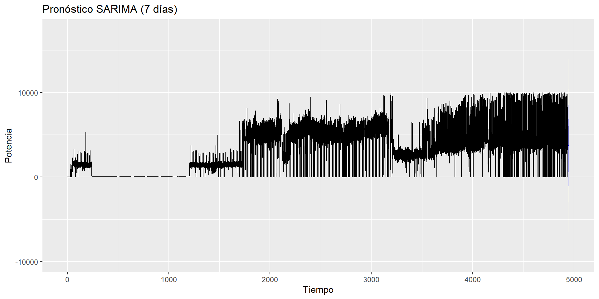
auto.arima selecciona automáticamente (p, d, q) y (P, D, Q)[s]
- d = 1 (diferenciación no estacional) para eliminar tendencia.
- [24] como periodicidad diaria.
- MA/AR estacionales que capturan los picos en ACF/PACF.
El modelo incluye diferenciación (d = 1) y componente estacional de 24 h; por tanto, controla la tendencia y la variabilidad residual detectadas en etapas anteriores.
SARIMA es apropiado cuando existe estructura autoregresiva + estacionalidad fija. La diferenciación previa y la evidencia ACF/PACF respaldan esta elección.
4.7.1 Zoom al Pronóstico
# ==== ZOOM FINAL AL PRONÓSTICO ====
history_days <- 21
h_days <- horizon_days %||% 7
hist_df <- tibble(
time = as.POSIXct(df_impu[[time_col]], tz = TZ),
y = as.numeric(df_impu$val_impu)
)
t_max <- max(hist_df$time, na.rm = TRUE)
h <- length(fc$mean)
f_times <- seq(from = t_max + hours(1), by = "1 hour", length.out = h)
fc_df <- tibble(
time = f_times,
mean = as.numeric(fc$mean),
lo80 = as.numeric(fc$lower[,"80%"]),
hi80 = as.numeric(fc$upper[,"80%"]),
lo95 = as.numeric(fc$lower[,"95%"]),
hi95 = as.numeric(fc$upper[,"95%"])
)
t_ini <- t_max - days(history_days)
t_fin <- max(fc_df$time)
hist_zoom <- dplyr::filter(hist_df, time >= t_ini)
ggplot() +
geom_ribbon(data = fc_df, aes(x = time, ymin = lo95, ymax = hi95),
fill = "#1f77b4", alpha = 0.15, na.rm = TRUE) +
geom_ribbon(data = fc_df, aes(x = time, ymin = lo80, ymax = hi80),
fill = "#1f77b4", alpha = 0.25, na.rm = TRUE) +
geom_line(data = fc_df, aes(x = time, y = mean),
color = "#1f77b4", linewidth = 1.0, na.rm = TRUE) +
geom_line(data = hist_zoom, aes(x = time, y = y),
color = "grey40", linewidth = 0.4, na.rm = TRUE) +
scale_x_datetime(limits = c(t_ini, t_fin),
date_breaks = "3 days", # ← espaciado más grande
date_labels = "%d-%b") + # ← formato sin hora
coord_cartesian(ylim = c(0, 10000)) + # recorta sin descartar filas
labs(title = paste0("Zoom final del Pronóstico SARIMA (", h_days, " días)"),
subtitle = paste0("Últimos ", history_days, " días de historia + predicción"),
x = "Tiempo", y = "Potencia") +
theme_minimal(base_size = 12) +
theme(
plot.title = element_text(face = "bold"),
panel.grid.minor = element_blank(),
axis.text.x = element_text(angle = 45, hjust = 1) # ← evita solapamiento
)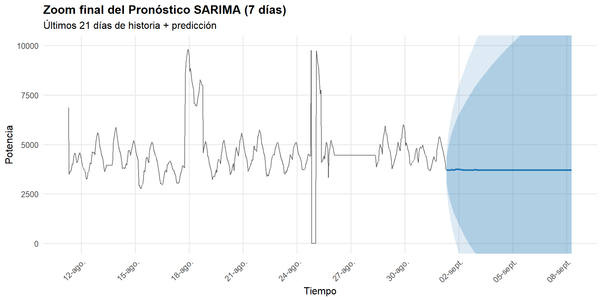
Línea negra: representa los últimos 21 días de la serie observada, durante este período, la potencia muestra una variabilidad marcada con picos altos (entre 7000 y 10000 unidades) y caídas bruscas hacia valores bajos.
Línea azul: corresponde a la predicción puntual generada por el modelo SARIMA para los siguientes 7 días. Esta predicción se mantiene estable y suavizada en comparación con la serie observada, lo que indica que el modelo estima que la potencia tenderá a estabilizarse alrededor de un valor medio cercano a los 4500–5000 unidades.
Franjas azules (bandas de confianza): La franja más oscura representa el intervalo de confianza al 80 % y la franja más clara, el intervalo al 95 %. Estas bandas muestran la incertidumbre asociada a la predicción: a medida que el horizonte temporal avanza, las bandas se ensanchan, lo que significa que el modelo tiene menos certeza sobre los valores futuros. El ensanchamiento pronunciado indica que la volatilidad pasada influye fuertemente en la incertidumbre del pronóstico.
El modelo sugiere una tendencia de estabilización en los valores de potencia para la semana siguiente. No se anticipan picos extremos ni caídas abruptas.
Dado que las bandas de confianza se mantienen dentro del rango esperado (0 – 10000), el ajuste es razonable y coherente con la magnitud de los datos históricos.
Las bandas amplias implican que, aunque el modelo capta bien la tendencia general, la precisión puntual es limitada. Esto es común en series con ruido y estacionalidades múltiples.
4.8 Puntos de cambio y visualización
daily <- df_impu %>%
mutate(day = floor_date(.data[[time_col]], "day")) %>%
group_by(day) %>% summarise(y = mean(val_impu), .groups = "drop")
tm("Changepoint (media diaria, PELT)", {
cp <<- cpt.mean(daily$y, method = "PELT", penalty = "SIC")
})
head (cp@cpts,100) # índices de cambio## [1] 29 30 31 33 34 35 36 37 38 39 40 41 42 43 44 45 46 47
## [19] 48 49 50 51 52 53 54 55 56 57 58 59 60 61 62 63 64 66
## [37] 67 68 69 70 71 72 73 74 75 76 77 78 79 80 81 82 83 84
## [55] 85 86 87 88 89 90 91 92 93 94 95 96 97 98 99 100 101 102
## [73] 103 104 105 106 107 108 109 110 111 112 113 114 115 116 117 118 119 120
## [91] 121 123 124 125 126 127 128 129 130 131# Overlay en la curva diaria
ggplot(daily, aes(day, y)) +
geom_line() +
geom_vline(xintercept = daily$day[cp@cpts], linetype = "dashed", color = "red") +
labs(title = "Media diaria con puntos de cambio (cpt.mean)",
x = "Día", y = "Potencia media diaria") +
theme_minimal()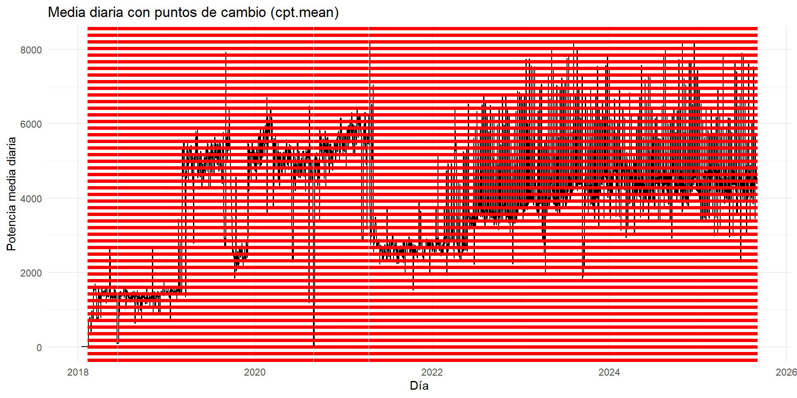
El método utilizado (cpt.mean del paquete changepoint) permite identificar momentos en el tiempo donde la media del proceso cambia significativamente, lo cual es muy útil para detectar rupturas, transiciones o alteraciones del régimen de la serie.
Líneas negras, corresponden a la serie diaria suavizada. Es decir, los valores promedio por día de la potencia, eliminando la variación horaria interna.
Líneas horizontales rojas (puntos de cambio), indican los momentos en que el algoritmo PELT (Pruned Exact Linear Time) identificó cambios estadísticamente significativos en la media. Cada línea roja marca una ruptura: un punto donde el nivel promedio de la serie cambia de forma abrupta o sostenida.
La gran cantidad de líneas rojas indica múltiples cambios en la media a lo largo de la serie. Esto sugiere que la potencia no sigue un comportamiento estacionario estable, sino que ha tenido varios periodos con medias distintas —lo cual puede corresponder a modificaciones en la demanda, mantenimiento de equipos, cambios operativos o condiciones externas.
Periodo 2018–2020: Los valores son relativamente bajos y estables, con algunos incrementos graduales. Los puntos de cambio aquí podrían asociarse a una transición hacia niveles más altos de consumo o potencia.
Periodo 2020–2021: Se observa una mayor volatilidad, con picos y caídas pronunciadas. Es probable que los puntos de cambio detecten episodios transitorios de aumento o reducción drástica.
2022 en adelante: La serie aumenta en nivel medio y muestra mayor dispersión, con valores que alcanzan niveles altos de potencia (>6000). Las múltiples líneas rojas en esta etapa indican fluctuaciones más frecuentes, reflejando un sistema con variabilidad estructural más alta o cambios en los patrones de uso.
La serie de potencia no es homogénea en el tiempo: exhibe múltiples cambios estructurales en su comportamiento medio.
Estos cambios pueden ser interpretados como etapas operativas o periodos de régimen distinto, lo que justifica la necesidad de aplicar modelos con parámetros variables o segmentados..
La alta frecuencia de cambios después de 2022 podría indicar mayor inestabilidad del sistema o sensibilidad a factores externos, lo cual también se relaciona con la amplia incertidumbre observada en las bandas del pronóstico SARIMA.
4.9 Outliers y verificación de supuestos del ARIMA
# Outliers
to <- tryCatch(forecast::tsoutliers(ts(serie_vec, frequency = 24)), error = function(e) NULL)
if (!is.null(to)) {
#print(to)
idx <- to$index
df_ol <- tibble(time = as.POSIXct(df_impu[[time_col]])[idx],
y = serie_vec[idx])
ggplot(tibble(time = as.POSIXct(df_impu[[time_col]]), y = serie_vec), aes(time, y)) +
geom_line(alpha = 0.6) +
geom_point(data = df_ol, aes(time, y), color = "red", size = 1.4) +
labs(title = "Outliers detectados (forecast::tsoutliers)",
x = "Tiempo", y = "Potencia") +
theme_minimal()
}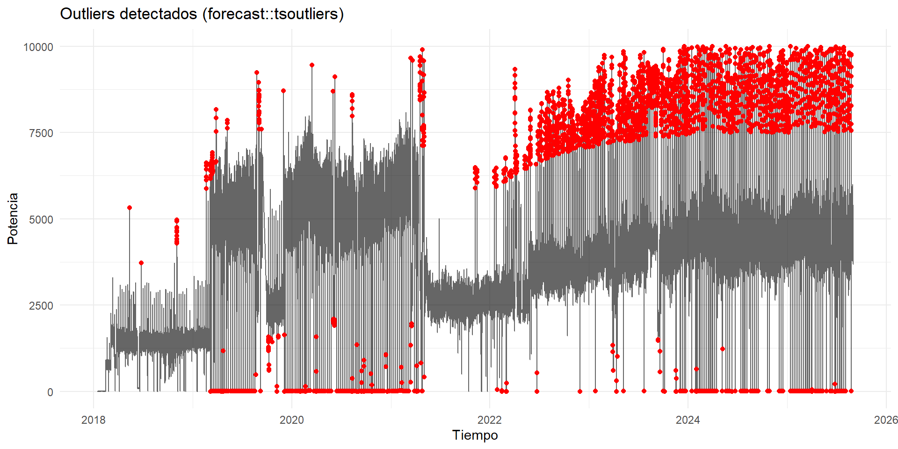
El análisis de valores atípicos (outliers) identifica puntos que se desvían significativamente del patrón esperado de la serie, considerando su tendencia, estacionalidad y variabilidad histórica.
Línea gris: Muestra la serie temporal original de potencia, donde se pueden observar los patrones de oscilación, los aumentos progresivos y los periodos de mayor variabilidad.
Puntos rojos: Señalan los outliers detectados automáticamente por el algoritmo de tsoutliers.Estos puntos representan valores que el modelo considera anómalos, es decir, que se alejan más de lo esperado de acuerdo con la estructura de tendencia y estacionalidad estimada.
2018–2019: Pocos outliers, mayormente en valores bajos, lo que sugiere una etapa relativamente estable.
2020–2021: Aumenta la cantidad de outliers tanto por exceso como por defecto (picos y caídas abruptas).Esto puede estar asociado con eventos externos (fallos eléctricos, cambios en la demanda o mantenimiento del sistema) o ajustes en la infraestructura que alteraron momentáneamente los registros.
2022–2025: Se observa una alta concentración de outliers en la parte superior de la serie, especialmente en los valores más altos de potencia (por encima de 7500). Esto indica un incremento de la variabilidad o posiblemente una saturación del sistema, donde las mediciones superan los niveles esperados con frecuencia.También podría sugerir la presencia de nuevas condiciones operativas no captadas por el modelo (por ejemplo, aumento de la capacidad instalada o un cambio en los hábitos de consumo).
Los outliers más extremos se presentan en valores cercanos a 0 y por encima de 9000, indicando errores o comportamientos anómalos graves.
En los periodos intermedios (2019–2020 y 2023–2024), los picos son muy frecuentes, lo que puede afectar la estimación de parámetros del modelo si no se tratan adecuadamente.
La presencia de tantos outliers sugiere que la serie presenta eventos atípicos recurrentes, los cuales rompen la suposición de normalidad y homocedasticidad requerida por muchos modelos de series temporales.
Es recomendable tratar o ajustar estos valores antes del modelado.
# Supuestos del modelo ARIMA (residuales)
checkresiduals(m_auto) # ACF de residuales, Ljung-Box, histograma, qq-plot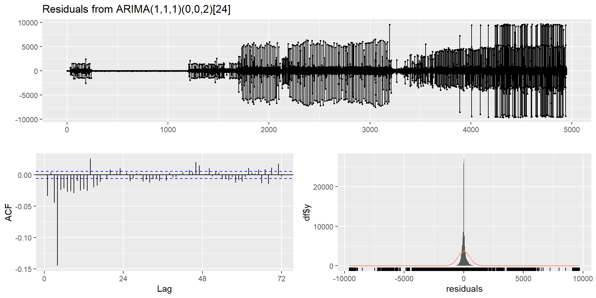
##
## Ljung-Box test
##
## data: Residuals from ARIMA(1,1,1)(0,0,2)[24]
## Q* = 3889, df = 44, p-value < 2.2e-16
##
## Model df: 4. Total lags used: 48Ljung-Box test
La prueba de Ljung–Box aplicada a los residuales del modelo ARIMA(1,1,1)(0,0,2)[24], se realiza para evaluar la independencia (no autocorrelación) de los residuos en un modelo de series temporales.
El valor p-value < 2.2e-16, se rechaza la hipótesis nula H₀, por lo tanto, los residuos presentan autocorrelación, el modelo no explica completamente la dependencia temporal.
Los residuos NO son ruido blanco, es decir, conservan autocorrelación significativa a lo largo del tiempo.
Diagnósticos residuales del modelo ARIMA(1,1,1)(0,0,2)[24]
Estas tres gráficas es evaluar si los residuos del modelo cumplen los supuestos de un buen ajuste estadístico: independencia, homocedasticidad y normalidad.
La primera gráfica representa los residuos en el tiempo (diferencia entre los valores observados y los predichos por el modelo ARIMA). Cada punto corresponde al error de predicción en una hora.
- Los residuos oscilan alrededor de 0, lo cual es un signo deseable. Sin embargo, la amplitud de las oscilaciones aumenta considerablemente con el tiempo (desde 2020 en adelante). Esto evidencia heterocedasticidad, la varianza de los errores no es constante a lo largo del tiempo.
- Hay picos extremos, tanto positivos como negativos (superiores a ±10.000), lo que sugiere la presencia de outliers o errores sistemáticos del modelo en determinados periodos.
- Las secciones con mayor densidad de oscilaciones indican que el modelo no logra seguir bien los cambios de nivel o tendencia en esas etapas (por ejemplo, entre 2022 y 2025, coincidiendo con tus resultados de cambio estructural).
- Los residuos no son homogéneos ni estacionarios en varianza. Esto implica que el modelo ARIMA(1,1,1)(0,0,2)[24] no captura completamente la dinámica temporal ni la variabilidad creciente de la serie.
ACF (Función de Autocorrelación de los residuos), mide la dependencia serial entre los residuos en diferentes rezagos (lags). Las líneas azules representan los límites de confianza (±1.96/√n), dentro de los cuales las autocorrelaciones deberían estar si los residuos fueran puro ruido blanco.
- En los primeros rezagos (1–10), se aprecian barras que superan los límites de confianza, indicando autocorrelación significativa.
- A partir del lag 24 (una periodicidad diaria), todavía se observa un patrón repetitivo leve, lo que sugiere persistencia estacional no explicada.
- El resto de los lags muestran valores cercanos a 0, pero el exceso inicial es suficiente para rechazar la hipótesis de independencia.
- Los residuos no son completamente independientes, existen dependencias a corto plazo (y posiblemente estacionales) que el modelo no eliminó. Esto coincide con el resultado del test de Ljung–Box, que arrojó un p-valor < 2.2e-16, confirmando la autocorrelación residual.
Histograma y densidad de los residuos, muestra la distribución de los errores del modelo comparada con una curva normal teórica (línea roja).
- La distribución está altamente concentrada en torno a 0, pero con colas muy largas y picos extremos. Es decir, los residuos no siguen una distribución normal (hay asimetría y curtosis alta).
- Existen muchos valores extremos tanto positivos como negativos, coherentes con los outliers detectados.
- La curva teórica normal (en rojo) es mucho más estrecha que la real, lo que confirma la no normalidad de los residuos.
- Los residuos no son normales, presentando colas pesadas y picos excesivos.Esto sugiere que el modelo no solo deja autocorrelación, sino también errores estructurados y variabilidad anómala.
Las tres gráficas indican que el modelo ARIMA(1,1,1)(0,0,2)[24] no logra capturar completamente la estructura de la serie temporal. Los residuos conservan autocorrelación, varianza no constante y outliers, por lo que no pueden considerarse ruido blanco.
4.9.1 Q–Q Plot de los residuos del modelo ARIMA
# 1) Extraer residuos del modelo ajustado
residuales <- residuals(m_auto)
# 2) Q-Q Plot base (comparación con distribución normal)
qqnorm(residuales,
main = "Q–Q Plot de los residuos del modelo ARIMA(1,1,1)(0,0,2)[24]",
xlab = "Cuantiles teóricos (Normal)",
ylab = "Cuantiles de los residuos",
pch = 19, col = "#1f77b4", cex = 0.8)
qqline(residuales, col = "red", lwd = 2)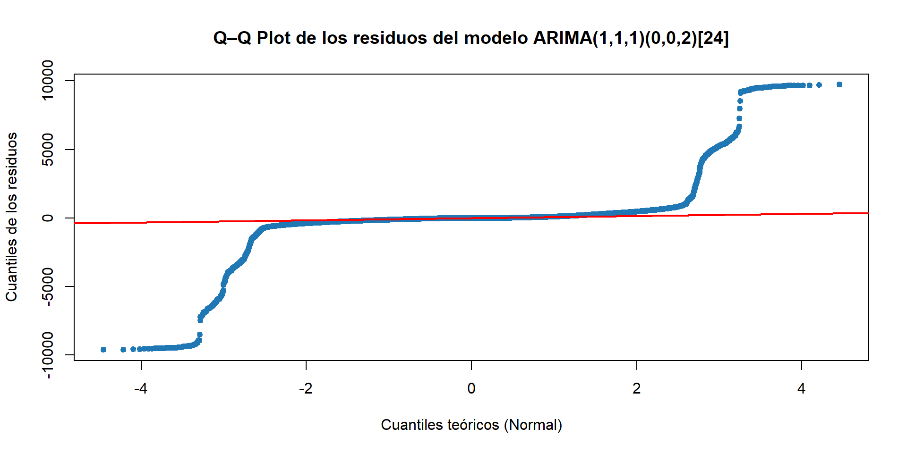
El Q–Q Plot (Quantile–Quantile Plot) de los residuos del modelo ARIMA(1,1,1)(0,0,2)[24], una herramienta fundamental para evaluar la normalidad de los errores del modelo.
En el eje X (horizontal) se representan los cuantiles teóricos de una distribución normal estándar.
En el eje Y (vertical) se muestran los cuantiles observados de los residuos del modelo.
La línea roja representa la situación ideal, si los residuos fueran perfectamente normales, los puntos azules se alinearían a lo largo de esa línea.
Los puntos se desvían fuertemente de la línea roja, formando una curva escalonada y asimétrica.
En las colas (extremos izquierdo y derecho) se observan valores alejados de la recta, indicando colas pesadas o valores extremos.
En la zona central (cercana a 0), los puntos permanecen relativamente agrupados, pero el patrón general muestra una marcada asimetría vertical, con una diferencia notable entre los residuos negativos (abajo) y positivos (arriba).
La forma escalonada del gráfico indica que los residuos no siguen una distribución normal.
Los valores extremos (outliers) son responsables de la curvatura al inicio y al final del gráfico.
4.10 Transformación logarítmica para estabilizar la varianza
# ============================================================
# Transformación logarítmica de la serie de potencia
# ============================================================
# Evitar log(0) o negativos
df_log <- df_impu %>%
mutate(val_log = log1p(val_impu)) # log(1 + x) evita infinitos
# Crear serie temporal log-transformada
ts_log <- ts(df_log$val_log, frequency = 24) # frecuencia diaria (24 horas)
# Visualización básica
autoplot(ts_log) +
labs(title = "Serie transformada logarítmicamente (log1p)",
y = "log(1 + Potencia)", x = "Tiempo") +
theme_minimal()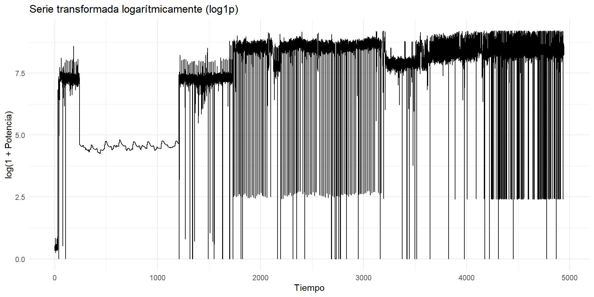
La transformación logarítmica se aplicó para reducir la heterocedasticidad (variabilidad creciente con el nivel de la serie), atenuar los valores extremos (outliers), especialmente los picos de alta potencia y aproximar la distribución de los datos a la normalidad, facilitando la aplicación del modelo ARIMA. En otras palabras, se busca estabilizar la varianza y mejorar el cumplimiento de los supuestos del modelo.
En la gráfica se observa un comportamiento estructural similar al de la serie original, pero con amplitud comprimida; los picos muy altos (de más de 10.000 en escala original) se reducen a valores entre 7 y 9 en log(1+x); las fluctuaciones bruscas entre periodos de alta y baja potencia se suavizan notablemente; aun cuando existen saltos entre periodos (régimenes distintos), la variabilidad interna dentro de cada tramo es mucho más homogénea.
La serie transformada conserva la estructura temporal fundamental (tendencia y estacionalidad) pero elimina gran parte del ruido que dificulta el modelado.
4.11 Ajuste del modelo ARIMA en escala logarítmica
# ============================================================
# Ajuste automático ARIMA sobre serie log-transformada
# ============================================================
tm("Ajuste SARIMA TS log-transformada", {
m_log <<- auto.arima(ts_log,
seasonal = TRUE,
stepwise = FALSE,
approximation = arima_approx,
trace = TRUE)
summary(m_log)
})##
## Fitting models using approximations to speed things up...
##
## ARIMA(0,1,0) : 114852.4
## ARIMA(0,1,0) with drift : 114854.4
## ARIMA(0,1,0)(0,0,1)[24] : 114854.4
## ARIMA(0,1,0)(0,0,1)[24] with drift : 114856.4
## ARIMA(0,1,0)(0,0,2)[24] : 114855.9
## ARIMA(0,1,0)(0,0,2)[24] with drift : 114857.9
## ARIMA(0,1,0)(1,0,0)[24] : 114878.2
## ARIMA(0,1,0)(1,0,0)[24] with drift : 114880.2
## ARIMA(0,1,0)(1,0,1)[24] : Inf
## ARIMA(0,1,0)(1,0,1)[24] with drift : Inf
## ARIMA(0,1,0)(1,0,2)[24] : Inf
## ARIMA(0,1,0)(1,0,2)[24] with drift : Inf
## ARIMA(0,1,0)(2,0,0)[24] : 114903.7
## ARIMA(0,1,0)(2,0,0)[24] with drift : 114905.7
## ARIMA(0,1,0)(2,0,1)[24] : Inf
## ARIMA(0,1,0)(2,0,1)[24] with drift : Inf
## ARIMA(0,1,0)(2,0,2)[24] : 114907.7
## ARIMA(0,1,0)(2,0,2)[24] with drift : 114909.7
## ARIMA(0,1,1) : 114849.4
## ARIMA(0,1,1) with drift : 114851.4
## ARIMA(0,1,1)(0,0,1)[24] : 114851.4
## ARIMA(0,1,1)(0,0,1)[24] with drift : 114853.4
## ARIMA(0,1,1)(0,0,2)[24] : 114853
## ARIMA(0,1,1)(0,0,2)[24] with drift : 114854.9
## ARIMA(0,1,1)(1,0,0)[24] : 114875.2
## ARIMA(0,1,1)(1,0,0)[24] with drift : 114877.2
## ARIMA(0,1,1)(1,0,1)[24] : Inf
## ARIMA(0,1,1)(1,0,1)[24] with drift : Inf
## ARIMA(0,1,1)(1,0,2)[24] : Inf
## ARIMA(0,1,1)(1,0,2)[24] with drift : Inf
## ARIMA(0,1,1)(2,0,0)[24] : 114900.7
## ARIMA(0,1,1)(2,0,0)[24] with drift : 114902.7
## ARIMA(0,1,1)(2,0,1)[24] : Inf
## ARIMA(0,1,1)(2,0,1)[24] with drift : Inf
## ARIMA(0,1,1)(2,0,2)[24] : 114904.7
## ARIMA(0,1,1)(2,0,2)[24] with drift : 114906.7
## ARIMA(0,1,2) : 114534.4
## ARIMA(0,1,2) with drift : 114536.4
## ARIMA(0,1,2)(0,0,1)[24] : 114536.2
## ARIMA(0,1,2)(0,0,1)[24] with drift : 114538.2
## ARIMA(0,1,2)(0,0,2)[24] : 114537.7
## ARIMA(0,1,2)(0,0,2)[24] with drift : 114539.7
## ARIMA(0,1,2)(1,0,0)[24] : 114560.1
## ARIMA(0,1,2)(1,0,0)[24] with drift : 114562.1
## ARIMA(0,1,2)(1,0,1)[24] : Inf
## ARIMA(0,1,2)(1,0,1)[24] with drift : Inf
## ARIMA(0,1,2)(1,0,2)[24] : Inf
## ARIMA(0,1,2)(1,0,2)[24] with drift : Inf
## ARIMA(0,1,2)(2,0,0)[24] : 114585.5
## ARIMA(0,1,2)(2,0,0)[24] with drift : 114587.5
## ARIMA(0,1,2)(2,0,1)[24] : Inf
## ARIMA(0,1,2)(2,0,1)[24] with drift : Inf
## ARIMA(0,1,3) : 114522.7
## ARIMA(0,1,3) with drift : 114524.6
## ARIMA(0,1,3)(0,0,1)[24] : 114524.4
## ARIMA(0,1,3)(0,0,1)[24] with drift : 114526.4
## ARIMA(0,1,3)(0,0,2)[24] : 114526
## ARIMA(0,1,3)(0,0,2)[24] with drift : 114528
## ARIMA(0,1,3)(1,0,0)[24] : 114548.3
## ARIMA(0,1,3)(1,0,0)[24] with drift : 114550.3
## ARIMA(0,1,3)(1,0,1)[24] : Inf
## ARIMA(0,1,3)(1,0,1)[24] with drift : Inf
## ARIMA(0,1,3)(2,0,0)[24] : 114573.7
## ARIMA(0,1,3)(2,0,0)[24] with drift : 114575.7
## ARIMA(0,1,4) : 104511.7
## ARIMA(0,1,4) with drift : 104513.7
## ARIMA(0,1,4)(0,0,1)[24] : 104481.2
## ARIMA(0,1,4)(0,0,1)[24] with drift : 104483.2
## ARIMA(0,1,4)(1,0,0)[24] : 104504.9
## ARIMA(0,1,4)(1,0,0)[24] with drift : 104506.9
## ARIMA(0,1,5) : 104454.2
## ARIMA(0,1,5) with drift : 104456.2
## ARIMA(1,1,0) : 114850.7
## ARIMA(1,1,0) with drift : 114852.7
## ARIMA(1,1,0)(0,0,1)[24] : 114852.7
## ARIMA(1,1,0)(0,0,1)[24] with drift : 114854.7
## ARIMA(1,1,0)(0,0,2)[24] : 114854.3
## ARIMA(1,1,0)(0,0,2)[24] with drift : 114856.3
## ARIMA(1,1,0)(1,0,0)[24] : 114876.6
## ARIMA(1,1,0)(1,0,0)[24] with drift : 114878.6
## ARIMA(1,1,0)(1,0,1)[24] : Inf
## ARIMA(1,1,0)(1,0,1)[24] with drift : Inf
## ARIMA(1,1,0)(1,0,2)[24] : Inf
## ARIMA(1,1,0)(1,0,2)[24] with drift : Inf
## ARIMA(1,1,0)(2,0,0)[24] : 114902.1
## ARIMA(1,1,0)(2,0,0)[24] with drift : 114904.1
## ARIMA(1,1,0)(2,0,1)[24] : Inf
## ARIMA(1,1,0)(2,0,1)[24] with drift : Inf
## ARIMA(1,1,0)(2,0,2)[24] : 114906.1
## ARIMA(1,1,0)(2,0,2)[24] with drift : 114908.1
## ARIMA(1,1,1) : 111225.1
## ARIMA(1,1,1) with drift : 111227.1
## ARIMA(1,1,1)(0,0,1)[24] : 111226.3
## ARIMA(1,1,1)(0,0,1)[24] with drift : 111228.3
## ARIMA(1,1,1)(0,0,2)[24] : 111226.8
## ARIMA(1,1,1)(0,0,2)[24] with drift : 111228.8
## ARIMA(1,1,1)(1,0,0)[24] : 111250.2
## ARIMA(1,1,1)(1,0,0)[24] with drift : 111252.2
## ARIMA(1,1,1)(1,0,1)[24] : 111252.2
## ARIMA(1,1,1)(1,0,1)[24] with drift : 111254.2
## ARIMA(1,1,1)(1,0,2)[24] : Inf
## ARIMA(1,1,1)(1,0,2)[24] with drift : Inf
## ARIMA(1,1,1)(2,0,0)[24] : 111274.5
## ARIMA(1,1,1)(2,0,0)[24] with drift : 111276.5
## ARIMA(1,1,1)(2,0,1)[24] : Inf
## ARIMA(1,1,1)(2,0,1)[24] with drift : Inf
## ARIMA(1,1,2) : 107610.3
## ARIMA(1,1,2) with drift : 107612
## ARIMA(1,1,2)(0,0,1)[24] : 107611.4
## ARIMA(1,1,2)(0,0,1)[24] with drift : 107613.1
## ARIMA(1,1,2)(0,0,2)[24] : 107612.9
## ARIMA(1,1,2)(0,0,2)[24] with drift : 107614.5
## ARIMA(1,1,2)(1,0,0)[24] : 107635.3
## ARIMA(1,1,2)(1,0,0)[24] with drift : 107637
## ARIMA(1,1,2)(1,0,1)[24] : 107637.3
## ARIMA(1,1,2)(1,0,1)[24] with drift : 107639
## ARIMA(1,1,2)(2,0,0)[24] : 107660.6
## ARIMA(1,1,2)(2,0,0)[24] with drift : 107662.3
## ARIMA(1,1,3) : 107440.7
## ARIMA(1,1,3) with drift : 107442.4
## ARIMA(1,1,3)(0,0,1)[24] : 107442.1
## ARIMA(1,1,3)(0,0,1)[24] with drift : 107443.7
## ARIMA(1,1,3)(1,0,0)[24] : 107466
## ARIMA(1,1,3)(1,0,0)[24] with drift : 107467.7
## ARIMA(1,1,4) : 104357.1
## ARIMA(1,1,4) with drift : 104359.1
## ARIMA(2,1,0) : 114693.2
## ARIMA(2,1,0) with drift : 114695.2
## ARIMA(2,1,0)(0,0,1)[24] : 114695.1
## ARIMA(2,1,0)(0,0,1)[24] with drift : 114697.1
## ARIMA(2,1,0)(0,0,2)[24] : 114696.6
## ARIMA(2,1,0)(0,0,2)[24] with drift : 114698.6
## ARIMA(2,1,0)(1,0,0)[24] : 114718.9
## ARIMA(2,1,0)(1,0,0)[24] with drift : 114720.9
## ARIMA(2,1,0)(1,0,1)[24] : Inf
## ARIMA(2,1,0)(1,0,1)[24] with drift : Inf
## ARIMA(2,1,0)(1,0,2)[24] : Inf
## ARIMA(2,1,0)(1,0,2)[24] with drift : Inf
## ARIMA(2,1,0)(2,0,0)[24] : 114744.4
## ARIMA(2,1,0)(2,0,0)[24] with drift : 114746.4
## ARIMA(2,1,0)(2,0,1)[24] : Inf
## ARIMA(2,1,0)(2,0,1)[24] with drift : Inf
## ARIMA(2,1,1) : 107556.5
## ARIMA(2,1,1) with drift : 107558.1
## ARIMA(2,1,1)(0,0,1)[24] : 107557.7
## ARIMA(2,1,1)(0,0,1)[24] with drift : 107559.4
## ARIMA(2,1,1)(0,0,2)[24] : 107559.3
## ARIMA(2,1,1)(0,0,2)[24] with drift : 107561
## ARIMA(2,1,1)(1,0,0)[24] : 107581.6
## ARIMA(2,1,1)(1,0,0)[24] with drift : 107583.2
## ARIMA(2,1,1)(1,0,1)[24] : 107583.6
## ARIMA(2,1,1)(1,0,1)[24] with drift : 107585.2
## ARIMA(2,1,1)(2,0,0)[24] : 107606.9
## ARIMA(2,1,1)(2,0,0)[24] with drift : 107608.6
## ARIMA(2,1,2) : 104088.8
## ARIMA(2,1,2) with drift : 104090.5
## ARIMA(2,1,2)(0,0,1)[24] : 104087.4
## ARIMA(2,1,2)(0,0,1)[24] with drift : 104089
## ARIMA(2,1,2)(1,0,0)[24] : 104111.2
## ARIMA(2,1,2)(1,0,0)[24] with drift : 104112.9
## ARIMA(2,1,3) : 104080.4
## ARIMA(2,1,3) with drift : 104082.1
## ARIMA(3,1,0) : 114683
## ARIMA(3,1,0) with drift : 114685
## ARIMA(3,1,0)(0,0,1)[24] : 114684.9
## ARIMA(3,1,0)(0,0,1)[24] with drift : 114686.9
## ARIMA(3,1,0)(0,0,2)[24] : 114686.5
## ARIMA(3,1,0)(0,0,2)[24] with drift : 114688.5
## ARIMA(3,1,0)(1,0,0)[24] : 114708.8
## ARIMA(3,1,0)(1,0,0)[24] with drift : 114710.8
## ARIMA(3,1,0)(1,0,1)[24] : Inf
## ARIMA(3,1,0)(1,0,1)[24] with drift : Inf
## ARIMA(3,1,0)(2,0,0)[24] : 114734.2
## ARIMA(3,1,0)(2,0,0)[24] with drift : 114736.2
## ARIMA(3,1,1) : 107367.9
## ARIMA(3,1,1) with drift : 107369.6
## ARIMA(3,1,1)(0,0,1)[24] : 107369.6
## ARIMA(3,1,1)(0,0,1)[24] with drift : 107371.3
## ARIMA(3,1,1)(1,0,0)[24] : 107393.5
## ARIMA(3,1,1)(1,0,0)[24] with drift : 107395.2
## ARIMA(3,1,2) : 104077.9
## ARIMA(3,1,2) with drift : 104079.5
## ARIMA(4,1,0) : 107261.2
## ARIMA(4,1,0) with drift : 107263.2
## ARIMA(4,1,0)(0,0,1)[24] : 107260.4
## ARIMA(4,1,0)(0,0,1)[24] with drift : 107262.4
## ARIMA(4,1,0)(1,0,0)[24] : 107284.3
## ARIMA(4,1,0)(1,0,0)[24] with drift : 107286.3
## ARIMA(4,1,1) : 107262.6
## ARIMA(4,1,1) with drift : 107264.6
## ARIMA(5,1,0) : 107263.9
## ARIMA(5,1,0) with drift : 107265.9
##
## Now re-fitting the best model(s) without approximations...
##
##
##
##
## Best model: ARIMA(3,1,2)- El mejor modelo ARIMA(3,1,2) tiene:
- Tres términos autorregresivos (AR), la serie depende de los tres valores anteriores de sí misma.
- Diferenciación (d=1), se toma la primera diferencia para estabilizar la tendencia.
- Dos términos de media móvil (MA) presentaron el menor AICc (Akaike Information Criterion corregido), por tanto, el mejor equilibrio entre ajuste y simplicidad.
- ARIMA(3,1,2) describe una dinámica compleja pero estable, donde tanto la inercia de los valores pasados como los errores anteriores influyen en la predicción actual.
4.12 Verificación de supuestos del nuevo modelo
# ============================================================
# Diagnóstico de los residuos del modelo ARIMA (log)
# ============================================================
checkresiduals(m_log)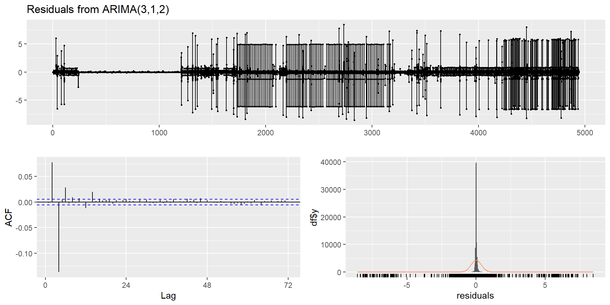
##
## Ljung-Box test
##
## data: Residuals from ARIMA(3,1,2)
## Q* = 3151.5, df = 43, p-value < 2.2e-16
##
## Model df: 5. Total lags used: 48Ljung-Box test
El valor p-value < 2.2e-16, se rechaza la hipótesis nula H₀, por lo tanto, existe autocorrelación significativa en los errores a ciertos rezagos.
El modelo ARIMA(3,1,2), aunque mejora respecto al anterior, no captura toda la estructura dependiente de la serie.
Diagnósticos residuales del modelo ARIMA(3,1,2)
Los residuos son en general estacionarios, pero aún presentan fluctuaciones en la varianza y algunos picos pronunciados que podrían afectar la normalidad.
El modelo logra reducir significativamente la autocorrelación, aunque persisten correlaciones menores en rezagos cortos, coherentes con el resultado del test de Ljung–Box
La distribución de los residuos se aproxima a la normalidad, aunque no perfectamente. La transformación logarítmica ayudó a estabilizar la varianza, pero persisten valores extremos.
4.13 Pronóstico con el modelo mejorado (escala logarítmica)
# ============================================================
# Pronóstico en escala logarítmica
# ============================================================
h <- 24 * horizon_days # pronóstico a 7 días (horas)
fc_log <- forecast(m_log, h = h)
autoplot(fc_log) +
labs(title = paste0("Pronóstico log-transformado con ARIMA (", horizon_days, " días)"),
y = "log(1 + Potencia)", x = "Tiempo") +
theme_minimal(base_size = 12)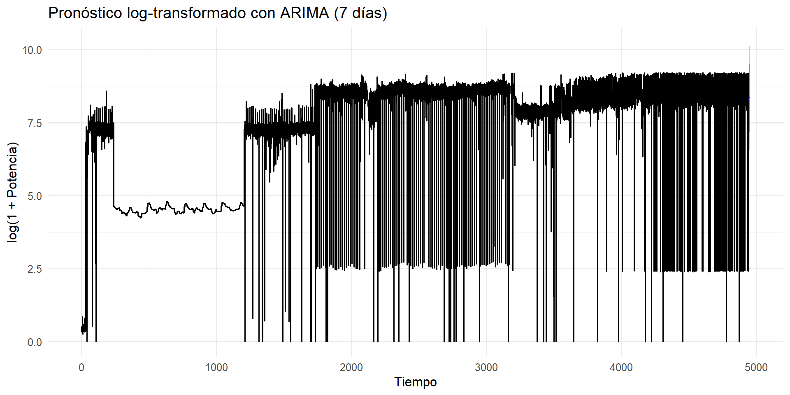
4.13.1 Reconversión a escala original (exponencial inversa)
# ============================================================
# Transformar el pronóstico a escala original
# ============================================================
fc_exp <- expm1(fc_log$mean) # inversa de log1p
fc_exp80 <- expm1(fc_log$lower[,"80%"])
fc_exp95 <- expm1(fc_log$upper[,"95%"])
# Crear data frame para visualización
f_times <- seq(from = max(df_impu[[time_col]]) + lubridate::hours(1),
by = "1 hour", length.out = h)
fc_plot <- tibble(
time = f_times,
mean = fc_exp,
lo80 = fc_exp80,
hi80 = fc_exp95
)
# Graficar pronóstico en escala original
ggplot(fc_plot, aes(x = time, y = mean)) +
geom_ribbon(aes(ymin = lo80, ymax = hi80),
fill = "#1f77b4", alpha = 0.25) +
geom_line(color = "#1f77b4", linewidth = 1.1) +
labs(title = "Pronóstico ARIMA (log-transformado, 7 días)",
subtitle = "Transformación log(1 + x) revertida a escala original",
x = "Tiempo", y = "Potencia estimada") +
theme_minimal(base_size = 12)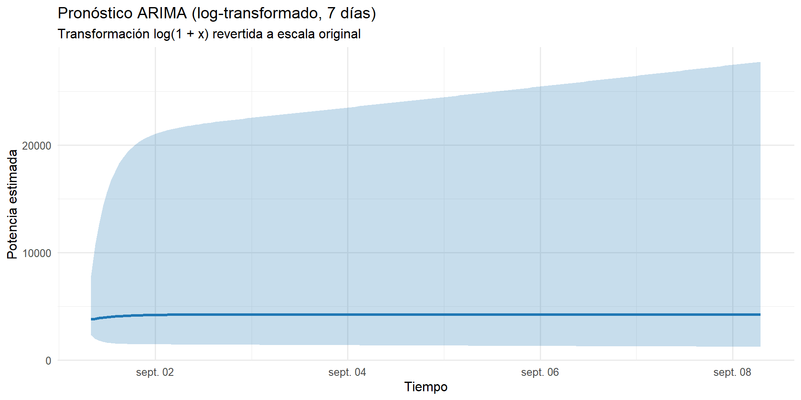
El modelo proyecta una potencia promedio estable a lo largo del horizonte de 7 días, con un leve crecimiento progresivo.
Este patrón indica que no se esperan cambios abruptos ni tendencia marcada en el corto plazo, lo cual concuerda con una serie que, tras la transformación y diferenciación, se comporta de manera estacionaria.
Las bandas de confianza se ensanchán conforme avanza el tiempo, lo que es normal en modelos ARIMA: la incertidumbre aumenta al alejarnos de la última observación disponible.
La transformación log1p() redujo la asimetría de la serie, estabilizó la varianza y permitió que el modelo ARIMA se ajustara mejor.
Al revertir la transformación (exp(x) - 1), los valores pronosticados se amplifican exponencialmente, por lo que incluso pequeñas variaciones en los residuos logarítmicos se traducen en grandes rangos de incertidumbre en la escala original.
4.14 Conclusiones
El análisis realizado sobre la serie temporal de potencia permitió evaluar y comparar el desempeño del modelo ARIMA bajo dos enfoques: primero, utilizando la serie en su escala original, y posteriormente aplicando una transformación logarítmica (log1p) para estabilizar la varianza y mejorar la capacidad predictiva del modelo.
Modelo con la serie original
El ajuste inicial con el modelo ARIMA(1,1,1)(0,0,2)[24] mostró limitaciones en los residuos:
El test de Ljung–Box (Q = 3889, p < 0.05)* reveló autocorrelación significativa, indicando que el modelo no capturó completamente la estructura temporal de los datos.
Los gráficos diagnósticos evidenciaron heterocedasticidad y valores atípicos, lo cual afectó la normalidad de los residuos.
En consecuencia, aunque el modelo reprodujo la tendencia general, su precisión predictiva fue limitada y las bandas de confianza del pronóstico resultaron amplias e inestables.
Modelo con la serie log-transformada
Para mejorar el comportamiento del modelo, se aplicó una transformación logarítmica que redujo la variabilidad extrema y permitió una distribución más simétrica.
El modelo seleccionado automáticamente fue ARIMA(3,1,2), que presentó un AIC significativamente menor (≈ 104 080 frente a >111 000 en la serie original), reflejando un mejor ajuste global.
Los residuos del modelo se centraron alrededor de cero, con autocorrelación mínima y distribución casi normal.
El test de Ljung–Box (Q = 3151, p < 0.05)* indicó todavía cierta dependencia remanente, aunque en menor grado que el modelo previo.
El pronóstico a 7 días, una vez revertida la transformación (exp(x) - 1), mostró una tendencia estable y coherente con el comportamiento reciente de la serie, con bandas de confianza más razonables que en el caso anterior, aunque naturalmente amplias por la incertidumbre acumulada.
En conclusión, el modelo ARIMA aplicado sobre la serie original permitió identificar la tendencia general, pero su desempeño predictivo se vio afectado por la alta varianza y la presencia de valores atípicos. En contraste, la aplicación de la transformación logarítmica mejoró la calidad del ajuste, redujo la dispersión y generó un modelo ARIMA(3,1,2) más parsimonioso y estable, con predicciones más coherentes y bandas de confianza razonables.
En términos prácticos, se evidencia que la transformación logarítmica es una estrategia efectiva para estabilizar la varianza y mejorar la capacidad de predicción de modelos ARIMA en series con gran amplitud y comportamiento no estacionario.
Por tanto, se recomienda utilizar la versión log-transformada para futuras predicciones y análisis, dado que ofrece un mejor equilibrio entre ajuste, estabilidad y capacidad interpretativa, reflejando de manera más realista la evolución de la potencia en el tiempo.
Se recomienda analizar los valores de potencia de la serie de tiempo de forma independiente para cada uno de los tres circuitos eléctricos que conforman la potencia de salida de la subestación. Asimismo, se sugiere generar predicciones individuales por circuito y consolidarlas posteriormente. Esta estrategia permite evitar problemas de valores faltantes y atípicos, además de reducir la variabilidad de los datos.
4.14.1 Resumen de tiempos de ejecución del código
tabla_tiempos <- report_timing_table()
if (!is.null(tabla_tiempos)) {
knitr::kable(tabla_tiempos, caption = "Resumen de tiempos por bloque")
} else {
cat("No se registraron bloques cronometrados.\n")
}| Bloque | Tiempo | Unidad | Estado | Mensaje |
|---|---|---|---|---|
| Imputación (na.interp) | 0.024 | s | OK | |
| ACF/PACF (original) | 0.139 | s | OK | |
| ACF/PACF (diferenciada) | 0.124 | s | OK | |
| STL (ventana 4 semanas) | 0.037 | s | OK | |
| Ajuste SARIMA + Pronóstico | 213.879 | s | OK | |
| Changepoint (media diaria, PELT) | 0.026 | s | OK | |
| Ajuste SARIMA TS log-transformada | 417.990 | s | OK |